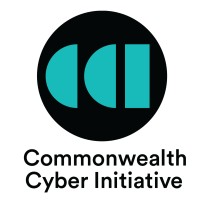
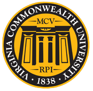
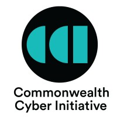
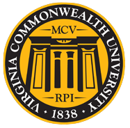

The SecQ Lab advances the foundations of security and scalability in complex systems through the integration of quantum intelligence (quantum optimization and quantum machine learning) and graph machine learning. Our research spans critical infrastructures, social and technological networks, and blockchain systems, with a focus on developing trustworthy, resilient, and scalable solutions.
News
IonQ Research grant awarded
September 2025
“Quantum Approximate Optimization and Machine Learning for Real-World Applications” received support from IonQ Research (Google/IonQ Cloud credits); see IonQ for program details.
CCI CVN grant awarded
August 2025
Our proposal on securing CPS with Quantum computers was funded by the Commonwealth Cyber Initiative – Central Virginia Node (CCI CVN); see CCI.
QCE’25 workshop paper accepted
July 2025
Our paper “RELIC: Reinforcement Learning Based Ising Optimization via Graph Compression” was accepted to the QCRL Workshop Track at IEEE Quantum Week (QCE’25); conference info: IEEE QCE.
QCE’25 technical paper accepted
July 2025
Our paper “Noise-aware Quantum Annealing for State Estimation in Power Systems” was accepted to the QAPP Track at IEEE Quantum Week (QCE’25); conference info: IEEE QCE.
AAAI’25 paper accepted
December 2024
Our paper “Scalable Quantum-Inspired Optimization through Dynamic Qubit Compression” was accepted (oral) at AAAI 2025; paper: arXiv:2412.18571, conference: AAAI’25.
CCI Hub award announced
December 2024
Our proposal “Privacy Preserving Federated IoT Learning for Smart Public Health Surveillance” was funded by the CCI Hub; see CCI.
CCI CVN award granted
August 2023
Our proposal “Weakly-supervised Federated Graph Learning for Cyber-Physical Systems” was funded by CCI – Central Virginia Node (Aug 1, 2023 – Jul 31, 2024); see CCI.
NSF grant awarded
August 2022
Our proposal “Collaborative Research: AMPS: Rethinking State Estimation for Power Distribution Systems in the Quantum Era” was funded by the National Science Foundation (NSF); agency: NSF.
Paper accepted at QCE’22
May 2022
Our paper “FastHare: Fast Hamiltonian Reduction for Large-scale Quantum Annealing” was accepted to the 2022 IEEE International Conference on Quantum Computing and Engineering (QCE’22); paper: arXiv:2205.05004, conference: IEEE QCE’22.
Thang N. Dinh
Virginia Commonwealth University
Education
University of Florida, USA 2008 - 2013
Vietnam National University, Hanoi, Vietnam 2003 - 2007
Contact
ERB 2321, College of Engineering,
Virginia Commonwealth University,
Richmond, VA, 23284
Email: tndinh [at] vcu.edu
Research Interests:
- Graph Machine Learning
- Quantum Computing
- Approximation Algorithm
- Applications: Social Networks, Blockchain and Distributed Learning,
Smart grids, Network security, Drug Discovery, Pandemic modeling
Lab Members
PhD Students
- Cong Cao
- Bao Tran
Undergraduate Students
- Jonah Minkoff
Awards and Honors
- Best Paper Award, ACM Mobicom 2019
- Best Paper Award Nominee, ACM Sensys 2018
- Selected for Best Papers of ICDM 2017
- Best Paper Award Nominee, ACM Sensys'17
- Best Paper Award, ACM MobiCom 2017 - S3 Workshop
- Best-in-Session Presentation Award, INFOCOM 2016
- Best Paper Award, 4th Int. Conf. on Computational Social Networks, 2015
- Alumni Fellowship Award, University of Florida, 2008
- The Honda Young Engineer and Scientist Award, Honda Foundation and NIST, 2007
- Distinguished Academic Achievement Award, Vietnam National University, 2007
- Microsoft Scholarship, By Bill Gates for Top 10 Outstanding Vietnamese Students, 2006
- Bronze Medal, 15th Int. Olympiad in Informatics (IOI), US, 2003
Selected Publications
- Co Tran-Bao Tran, Hy T Son, and Thang N Dinh. Scalable Quantum-Inspired Optimization through Dynamic Qubit Compression." The 39th AAAI Conference on Artificial Intelligence (AAAI), 2025 [Oral Presentation].
- Thai, Phuc, My T Thai, Tam Vu, and Thang N Dinh. FastHare: Fast Hamiltonian Reduction for Large-scale Quantum Annealing." 2022 IEEE International Conference on Quantum Computing and Engineering (QCE), 2022.
- Thai, Phuc, My T. Thai, Tam Vu, and Thang N. Dinh. SaPHyRa: A Learning Theory Approach to Ranking Nodes in Large Networks." The 38th IEEE International Conference on Data Engineering (ICDE 2022), 2022.
- Dinh, Thang N, and My T Thai. AI and blockchain: A disruptive integration., IEEE Computer Magazine, 2018.
- Nguyen, Hung T, Tri P Nguyen, Tam N Vu, and Thang N Dinh. Outward influence and cascade size estimation in billion-scale networks." Proceedings of the ACM on Measurement and Analysis of Computing Systems (SIGMETRICS), 2017
- Dinh, Thang N, Xiang Li, and My T Thai. Network Clustering via Maximizing Modularity: Approximation Algorithms and Theoretical Limits." IEEE International Conference on Data Mining (ICDM), 2015.
Full List of Publications
Google Scholar
DBLP
Scopus
Research Projects
Quantum-inspired State Estimation
Develops a novel quantum-inspired framework for power state estimation, addressing cyber risks and operational challenges in decentralized grids.
- Design a quantum network architecture for secure communication in smart grids
- Develop efficient quantum computing solutions for power state estimation
- Propose a robust and trustworthy distributed system state estimation using quantum technologies and deep learning
Quantum Leap in Health Optimization
Harness the power of near-term quantum devices for addressing the most pressing human health challenges, including timely drug discovery, a crucial capability in preparation for future pandemics.
- Innovative approaches to map medical optimization problems onto limited-capabilities NISQ quantum devices
- Idenitfy optimal positions and shapes of molecules to target proteins
- Quantum-accelerated medical data analysis for improved diagnoses and treatment plans
Trustworthy and Privacy-preserving Federated Learning
Develops a principled and systematic federated learning framework that offers protection against threats from both malicious users and servers.
- Develop lightweight secure aggregation and backdoor inspection mechanisms
- Design a succinct non-interactive argument of knowledge (SNARK) attestation for high accuracy and efficiency
- Propose a blockchain-based FL architecture for privacy and security protection
Modeling Viral Marketing and Diffusions on Social Media
Scalable analysis for billion-scale social networks to unveil social dynamic patterns- Investigate how information propagates so quickly and widely across networks
- Analyze what features of platforms like Twitter and Facebook amplify virality and user susceptibility
The research is made possible thanks to the support of

 





Teaching
- CMSC 691: Graph Neural Networks and Applications
- CMSC 691: Advanced Social Network Analysis & Security
- CMSC 491: Introduction to Blockchain and Applications
- CMSC 501: Advanced Algorithms